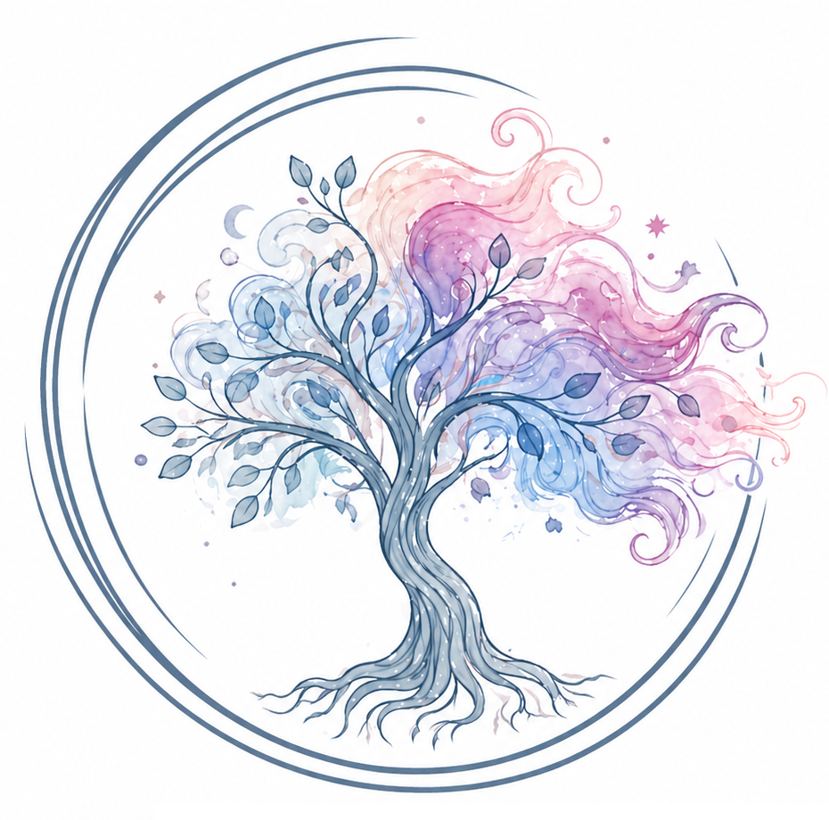

Ingrid Segura
Acompaño procesos personales desde la escucha, el cuidado y el respeto, ofreciendo un espacio donde poder poner palabras a lo que se vive y mirarlo con más claridad.
Saber másPsicología y acompañamiento emocional en La Sénia
Un espacio compartido creado por Ingrid Segura y Mònica Caballer Boix.
Un lugar de pausa, escucha y cuidado para acompañar procesos personales, momentos de cambio y etapas en las que necesitamos comprender mejor lo que estamos viviendo.


Espaiet es un proyecto compartido que nace del deseo de ofrecer un lugar para ti, de escucha y acompañamiento emocional en La Sénia.
Es un espacio pensado para acoger procesos personales con respeto, proximidad y sensibilidad, entendiendo que cada persona tiene su historia, su ritmo y su manera de vivir lo que le ocurre.
Desde esta mirada, ponemos en común nuestra forma de acompañar y, al mismo tiempo, respetamos la identidad y el recorrido propio de cada persona.
Ver serviciosAcompaño procesos personales desde la escucha, el cuidado y el respeto, ofreciendo un espacio donde poder poner palabras a lo que se vive y mirarlo con más claridad.
Saber másSu manera de trabajar pone en el centro a la persona, su momento vital y la necesidad de encontrar un espacio seguro desde donde comprender, sostener y transformar lo que está ocurriendo.
Saber másOfrecemos un espacio terapéutico para momentos de malestar emocional, ansiedad, procesos de cambio, dificultades relacionales o etapas en las que es necesario parar y reconectar con una misma.
Nuestro enfoque parte de la escucha, la confianza y el respeto por los ritmos de cada proceso.
Descubrir serviciosSi sientes que este espacio puede encajar con el momento que estás viviendo, puedes escribirnos sin compromiso.
Podemos orientarte, resolver dudas y ver juntas cuál puede ser la mejor manera de acompañar tu proceso.
Escríbenos